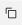

Create subscriptions
Now that the Configuration and Versions have been created, the next step is to create subscriptions for the Food Delivery application. In total, six subscriptions will be created:
| Subscription name | Version | Cluster group(s) |
|---|---|---|
| kafka-mongo-redis-on-all-clusters | kafka-mongo-redis | food-delivery-production-clusters food-delivery-development-clusters |
| backend-on-all-clusters | food-delivery-backend | food-delivery-production-clusters food-delivery-development-clusters |
| frontend-on-dev-clusters | food-delivery-frontend-v1 | food-delivery-development-clusters |
| frontend-on-prod-clusters | food-delivery-frontend-v1 | food-delivery-production-clusters |
| route-dev | development-route | food-delivery-development-clusters |
| route-prod | production-route | food-delivery-production-clusters |
These subscriptions will use the versions you created to deploy the code to the selected OpenShift clusters.
-
If you closed the IBM Cloud portal after the previous step, open the IBM Cloud portal to the Satellite Configurations page: https://cloud.ibm.com/satellite/configuration.
-
Click the the configuration based upon your Demo-UUID
- Click the Create subscription + button on the Overview page under Subscriptions.
Danger
Do NOT delete any existing subscriptions! These are used to create the OpenShift namespace you will be using in this demonstration. Deleting them will break the demonstration.
- Create the kafka-mongo-redis-on-all-clusters subscription.
Use the following values for the Create a subscription dialog:
Subscription name
Version Cluster groups-
Click Create for the kafka-mongo-redis-on-all-clusters subscription.
-
Verify the kafka-mongo-redis-on-all-clusters is created and deployed.
Immediately after clicking create, notice the new Subscription appears in the Subscriptions table. Initially, the Rollout status shows ---. After a few seconds, this should change to 2 deployed.

Failure
If the status doesn't update automatically, click the page refresh button of your browser.
- Click the kafka-mongo-redis-on-all-clusters entry in the table and view the Subscription details.
Note
In some circumstances, you may see more than 2 entries in the details section. As long as you have a successful deployment to both aws_os_cluster and ibmcloud-wdc-os, you can continue. If one or more of the deployments fail, you need to verify the versions created in the previous step are correct. Make sure you successful replace all instances of #######abc-ns with your Demo-UUID.
- Click your configuration link to return to the configuration page.

- Repeat the above process (steps 3 thru 8) for each of the remaining subscriptions.
| Subscription Name | Version | Cluster group(s) |
|---|---|---|
| backend-on-all-clusters | food-delivery-backend | food-delivery-production-clusters food-delivery-development-clusters |
| frontend-on-dev-clusters | food-delivery-frontend-v1 | food-delivery-development-clusters |
| frontend-on-prod-clusters | food-delivery-frontend-v1 | food-delivery-production-clusters |
| route-dev | development-route | food-delivery-development-clusters |
| route-prod | production-route | food-delivery-production-clusters |
To avoid typographical errors, use the  to copy the values below and paste into the Subscription name field.
- Verify all Subscriptions are created and deployed.
Info
In the next step you will access the Red Hat OpenShift portal to further verify the application has been deployed. You will also access the application and make updates to it using the food-delivery-frontend-v2 version.